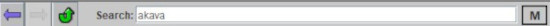

The WOLF application contains a main panel in the center of the frame and a series of control components around the north, west, and south borders. Most of the entry will be done in the center section and error messages appear in the south section. The control components are mostly icons that users click to cause the program to perform various general-purpose operations. These icons are standard across many applications so the learning curve will be minimal The pictures above show those icons that appear.
The first group, on the top are respectively are for opening, closing, importing, exporting, creating a mobile app, making a web-site, saving, printing, or previewing. Most of these are self-explanatory. (Their use is very similar to that of many other programs.) For example, clicking open will bring up a file choose dialog where you can navigate to the dictionary file that you want. WOLF will remember the last folder you went to, which saves unnecessary clicks to find dictionaries to open in the future. Of course, you can avoid the open dialog altogether by using WOLF drag and drop facilities. The default location for WOLF dictionaries is Acorns within your documents folder.
To create a mobile application version, use the icon that looks like a phone. It creates a file with an .acorns extension. This file can be executed used by the Android or IOS ACORNS mobile application. Further documentation for installing and using these mobile programs can be found on the ACORNS Web-site under the ACORNS download and documentation links.
The icon that looks like a spider web is activated to create a dictionary-based web site. Two files are generated. The first is the name of the dictionary with an .html extension. The second is a folder with the same name, but without the extension. The latter has all of the audio, video, and font resources needed. Click/touch on the .html version to bring up the web-site. These two files can be uploaded to a tribal web-site; they can also be distributed using CDs or travel disks.
A few notes are in order that pertain to export and import. When you export a file, WOLF creates an XML file which contains all of the dictionary text. It also creates a directory with the same name, but without the .xml extension. This directory contains all of the audio, pictures, and video incorporated into the dictionary using industry-standard codecs. You can access these files with other application programs that understand their formats. The import option recovers the dictionary. You can think of export as an best-practice industry-standard way to save your dictionary; it executes slower than the save option and requires more disk storage.
The import option recognizes files with either 'xml" or 'db' extensions. Those with 'xml' extensions are created using either the WOLF export option, from EXCEL worksheets, or from SIL Lift formatted documents. Please refer to Excel Imports for more information regarding importing Excel worksheets to Wolf. Lift formatted dictionaries are created by SIL's We Say, Lexique Pro, or Field Works applications.
Those files with a '.db. extension are generated by SIL's Toolbox or FieldWorks applications and are in MDF or SFM format. Please refer to SIL documentation (ex: the making dictionaries document) for more detail regarding these files. WOLF recognizes the complete set of MDF field markers with the following clarifications. You can skip these notes if they are not applicable to your situation.
When selecting either print or print preview, make sure to first select the desired template controlling your output format first. The drop-down menu on the top right of the WOLF screen is used for this purpose. Please refer to output templates for more details.
|  |
The next group of icons on the top of the WOLF screen (shown above) are used for searching the dictionary to create different views of the words of interest. Please refer to the search and sort page for more details.
Users can use the icons on the south wall of the WOLF application frame, all the way to the right. WOLF's undo and redo operations are on a word level. This means that you might make several changes to a word and undo/redo them as you wish before selecting another. Once you scroll or move away from a word, the set of changes are finalized.
The help icon () appears on the top left corner of the Wolf application frame. Clicking on this button brings up a help program where you can search for instruction regarding its use.